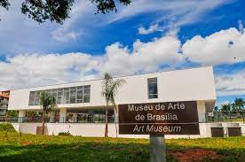

MUSEU DE ARTE DE BRASÍLIA | BRASÍLIA, BRASIL
Ocupando área construída de 4.800 m², o Museu de Arte de Brasília (MAB) está situado às margens do Lago Paranoá, no Setor de Hotéis e Turismo Norte, entre a Concha Acústica e o Palácio da Alvorada. É composto de três pavimentos: térreo, pavimento superior e subsolo. O acervo é formado por obras de arte moderna e contemporânea, que vão da década de 1950 ao ano de 2001, caracterizadas pela diversidade de técnicas e materiais, com pinturas, gravuras, desenhos, fotografias, esculturas, objetos e instalações.
Inauguração
A reforma foi concluída e o museu é oficialmente entregue a Brasília, no aniversário de 61 Anos, em 21 de abril de 2021.
História
O Museu de Arte de Brasília (MAB) foi criado em 1985 pelo Governo do Distrito Federal, por iniciativa da Secretaria de Educação e Cultura, que já reunia, em suas instalações, centenas de obras significativas da produção das artes visuais moderna e contemporânea, provenientes de doações e prêmios aquisitivos de salões locais e nacionais. Ocupando área construída de 4.800 m², o Museu de Arte de Brasília – MAB está situado às margens do Lago Paranoá, no Setor de Hotéis e Turismo Norte, entre a Concha Acústica e o Palácio da Alvorada. É composto de três pavimentos: Térreo: jardins, mostra permanente de esculturas do acervo, Galeria Espaço 1 (mostras temporárias) e cafeteria; Pavimento superior: mostra permanente de esculturas, pinturas, gravuras, desenhos, fotografias, instalações e objetos do acervo, Galeria Espaço 2 (mostras temporárias) e sala multiuso.
O edifício, datado de 1960, foi projetado por arquitetos da Novacap e construído no período pioneiro da capital, seguindo os padrões da arquitetura moderna, por sua volumetria e predominância de vãos livres. O prédio abrigou, inicialmente, o Clube das Forças Armadas e, mais tarde, o Casarão do Samba.
O Museu de Arte de Brasília (MAB) consolidou-se como espaço de formação e informação, adequando-se à função museológica, aperfeiçoando suas ações, na compreensão de que é um bem cultural imprescindível para a cidade e para a região. Neste entendimento, a Secretaria de Estado de Cultura tem empreendido esforços para dotar o Museu da forma mais adequada, garantindo condições que reúnam conforto, segurança e acessibilidade.
O acervo do MAB é formado por obras de arte moderna e contemporânea, que vão da década de 50 ao ano de 2001, caracterizadas pela diversidade de técnicas e materiais, com pinturas, gravuras, desenhos, fotografias, esculturas, objetos e instalações.
A arte moderna, que compreende a produção no período de 1917 a 1950, encontra-se representada por vários artistas de expressão, como Abraham Palatnik, Abelardo Zaluar, Aldemir Martins, Amilcar de Castro, Arcangelo Ianelli, Arthur Luiz Piza, Burle Marx, Clovis Graciano, Danilo Di Prete, Darel Valença, Edith Behring, Emanoel Araújo, Fayga Ostrower, Fiaminghi, Franz Weissman, Hércules Barsotti, Iberê Camargo, Israel Pedrosa, Jacques Douchez, Liuba Wolf, Lívio Abramo, Lygia Pape, Lothar Charoux, Marcelo Grassman, Maria Bonomi, Mário Cravo Júnior, Thomie Ohtake, Thomaz Ianelli, Ubi Bava, Vasco Prado, Yolanda Mohalyi, Wega Nery e Wilma Pasqualini.
Da contemporaneidade (1960 a 1980), estão presentes no MAB obras de Aguilar, Anna Bella Geiger, Antônio Henrique Amaral, Antônio Dias, Avatar Moraes, Babinski, Baravelli, Carmela Gross, Cláudio Tozzi, Cleber Gouvêa, Humberto Espíndola, Ivens Machado, João Câmara Filho, José Resende, Luiz Áquila, Mário Cravo Neto, Nelson Leirner, Odriozola, Regina Silveira, Siron Franco, Stockinger, Waldemar Cordeiro, Waltércio Caldas e outros.
Da atualidade, que compreende o período de 1980 até hoje, o MAB tem em seu acervo obras de Alex Fleming, Ana Maria Tavares, Angelo Venosa, Antônio Poteiro, Arthur Omar, Barrão, Emmanuel Nassar, Elias Murad, Félix Bressan, Fernando Lopes, Gisela Waetge, Jadir Freire, Leda Catunda, Leonilson, Maria Tereza Louro, Mário Cravo Neto, Miguel Rio Branco, Mônica Nador, Monica Sartori, Nelson Félix, Nuno Ramos, Odires Mlazsho, Paulo Monteiro, Rinaldo, Rodrigo Andrade, Rosangela Rennó, Rubem Grilo, Selma Calheira, Sérgio Romagnolo, Shoko Susuki, Tunga e outros.
Destaca-se também a arte produzida por artistas nascidos ou radicados no Distrito Federal, como André Lafetá, Ana Miguel, Anselmo Rodrigues, Armindo Leal Marques, Athos Bulcão, Assis Aragão, Betty Bettiol, Carlos Borges, Dalmácio Longuinho, Darlan Rosa, Delei, Douglas Marques de Sá, Doris Xavier, Eduardo Cabral, Elder Rocha Filho, Fernando Carpaneda, Francisco Galeno, Gladstone, Glênio Bianchetti, Glênio Lima, Hugo Mund Jr., Jô Oliveira, Leda Watson, Lourenço de Bem, Luiz Carlos Cruvinel, Luiz Costa, M. Kalil, Marcelo Feijó, Marlene Godoy, Milan Dusek, Milton Ribeiro, Naura Timm, Nelson Maravalhas, Nogueira de Lima, Omar Franco, Orlando Luiz Costa, Pulika, Ralph Ghere, Rômulo Andrade, Rose Frajmund, Rubem Valentim, Seu Quincas, Seu Pedro, Sérgio Rizzo, Sônia Paiva, Terezinha Louzada, Toninho de Sousa, Zé Nobre, Zezinho, Wagner Barja e outros.